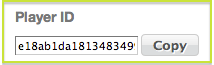

Learn how create, update, enable, disable, and use discovery profiles.
Creating Discovery Profiles in the Backlot UI
Note: In its initial
conception, discovery profiles were intended to be used only with specific video
players. However, their actual use is independent of the player.
You must
first create a named player with the Backlot UI according to the steps in
Configuring Discovery in the Backlot UI. When you create a player, a default
discovery profile is created along with it.
Note: The discovery profile has the same
identifier as its associated player. This identifier is on the lower left of the
player Discovery tab in the Backlot UI:

Updating Discovery Profiles
You can update a discovery profile in either
of the following ways:
Enabling and Disabling Discovery Profiles
You can enable or disable
a discovery profile in either of the following ways:
Using Discovery Profiles
If you rely on the named Ooyala Player embedded in your web page, it uses its
associated discovery profile.
With the Discovery API, to make actual use of a profile in recommendations, you refer
to the profile identifier on any of the API "read" requests listed in Summary of Ooyala Discovery REST API Requests.